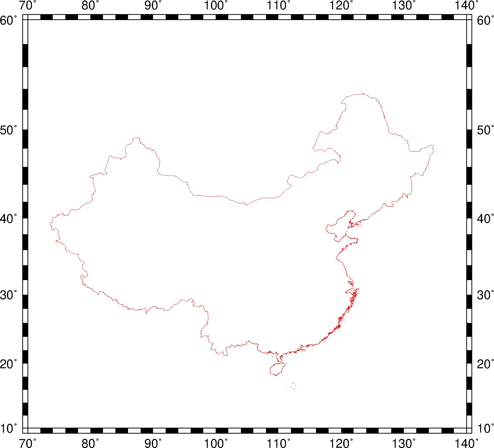
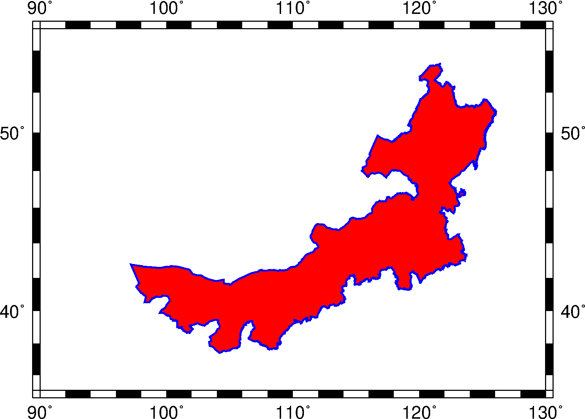

11.3 DCW: 世界数字图表¶
DCW数据主页： http://www.soest.hawaii.edu/wessel/dcw/
DCW，全称为 Digital Chart of the World，即世界数字图表。GMT提供的DCW数据是在原始DCW数据的基础上修改得到的，其中包含了如下行政边界数据：
- 七大洲的洲界
- 全球250个国家或地区的边界
- 8个大国的省界/州界
GMT的 pscoast 模块可以直接绘制DCW数据中提供的行政边界数据，也可以使用 pscoast 的 -M 选项将边界数据导出为纯文本文件供其他程序使用。
GMT提供的DCW数据默认位于GMT安装目录下的 share/dcw 下，其中主要包含了三个文件：
dcw-gmt.nc: netCDF格式的DCW数据dcw-countries.txt: 辅助文件，内含国家代码dcw-states.txt: 辅助文件，内含省界代码
11.3.1 区域代码¶
为了绘制某个特定行政区域的边界，首先需要知道这些行政区域的代码。
洲代码¶
七大洲都有各自的代码，其代码分别为:
AF: 非洲（Africa）AN: 南极洲（Antarctica）AS: 亚洲（Asia）EU: 欧洲（Europe）OC: 大洋洲（Oceania）NA: 北美洲（North America）SA: 南美洲（South America）
国家代码¶
每个国家也有各自的编码。国家代码可以从DCW的辅助文件 dcw-countries.txt 中查找，其文件格式为:
洲代码 国家代码 国家名
该文件共计 250 个国家。文件内容大致如下:
AS BH Bahrain
AS BN Brunei
AS BT Bhutan
AS CN China
AS CX Christmas Island
AS GE Georgia
AS HK Hong Kong
AS HM Heard Island and McDonald Islands
AS ID Indonesia
AS IL Israel
AS IN India
其中可以看到，中国的国家代码为 CN。
省/州代码¶
目前有如下八个国家的省界/州界数据：
AR: 阿根廷AU: 澳大利亚BR: 巴西CA: 加拿大US: 美国CN: 中国IN: 印度RU: 俄罗斯
省代码可以从 DCW 辅助文件 dcw-states.txt 中查找到，其文件格式为:
国家代码 省代码 省名
以中国的数据为例，其包括全部 34 个省级行政区域：23 个省（包括台湾省），5 个自治区，4 个直辖市，以及香港，澳门 2 个特别行政区。中国的省代码是数字，和中国居民身份证号码相同:
CN 11 Beijing
CN 50 Chongqing
CN 31 Shanghai
CN 12 Tianjin
CN 34 Anhui
CN 35 Fujian
CN 62 Gansu
CN 44 Guangdong
CN 52 Guizhou
CN 46 Hainan
CN 13 Hebei
CN 23 Heilongjiang
CN 41 Henan
CN 42 Hubei
CN 43 Hunan
CN 32 Jiangsu
CN 36 Jiangxi
CN 22 Jilin
CN 21 Liaoning
CN 63 Qinghai
CN 61 Shaanxi
CN 37 Shandong
CN 14 Shanxi
CN 51 Sichuan
CN 71 Taiwan
CN 53 Yunnan
CN 33 Zhejiang
CN 45 Guangxi
CN 15 Nei Mongol
CN 64 Ningxia
CN 65 Xinjiang
CN 54 Xizang
CN 91 Xianggang (Hong Kong)
CN 92 Aomen (Macao)
11.3.2 使用说明¶
洲代码、国家代码和省代码都是字母，GMT通过如下方式区分：
- 在洲代码前加上
=号表示某个大洲，比如=AS表示亚洲 - 国家代码不需要做任何处理格式，比如
GB表示英国 - 省代码的格式为
country.state，即必须在省代码前加上国家代码才可以，比如US.TX表示美国 Texas 州
11.3.3 使用示例¶
绘制国界¶
绘制中国大陆边界（不含台湾、香港、澳门）：
gmt pscoast -JM15c -Baf -ECN+p0.25p,red -R70/140/10/60 > dataset_dcw_02.ps

绘制省界¶
绘制内蒙古，并设置边界颜色和填充颜色:
gmt pscoast -JM12c -Baf -ECN.15+p1p,blue+gred -R90/130/35/55 > dataset_dcw_03.ps

11.3.4 备注¶
DCW数据提供的中国国界数据不符合中国的领土主张，在正式刊物中发表使用此类国界数据的图件时都可能存在问题。此处展示的国界仅用于展示如何使用数据。